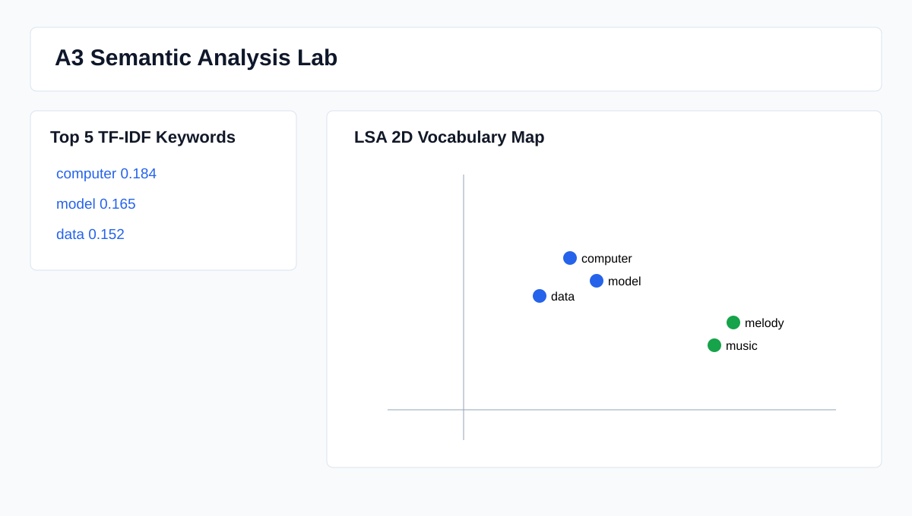
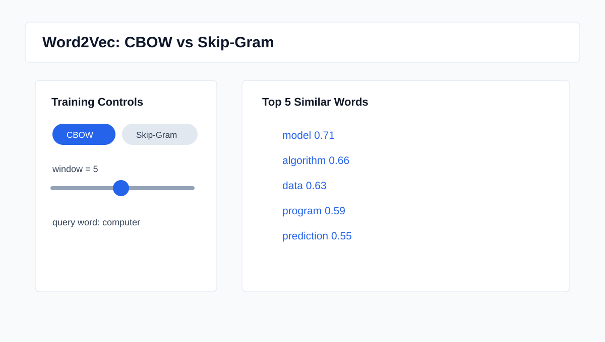
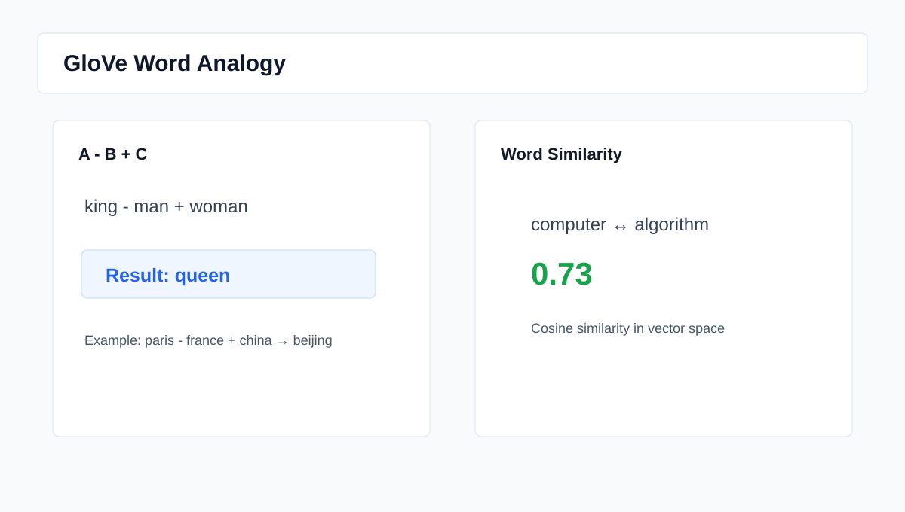

请使用 Python Streamlit 开发一个英文语义表示实验平台，包含 TF-IDF/LSA、Word2Vec、GloVe 和 FastText/Sent2Vec 四个模块。页面提供英文语料输入，并让四个模块共用同一份语料。
AI 输出与修改：创建 streamlit_app.py 和 semantic_core.py，使用 Streamlit 标签页组织四个实验模块，并准备约 500-1000 词的英文示例语料。
在第一个标签页中，按句子切分英文语料，使用 scikit-learn 计算 TF-IDF 矩阵，展示权重最高的 5 个关键词，并使用 TruncatedSVD 将词汇降到二维空间进行可视化。
AI 输出与修改：使用 TfidfVectorizer、CountVectorizer 和 TruncatedSVD 完成矩阵计算与 LSA 坐标生成，页面展示关键词表、TF-IDF 矩阵和二维散点图。
在第二个标签页中，使用 gensim 训练 Word2Vec，提供 CBOW 与 Skip-Gram 单选切换，提供 window 滑动条，输入一个单词后输出 Top 5 相似词。
AI 输出与修改：使用 gensim.models.Word2Vec，通过 sg=0 和 sg=1 切换架构，并用 most_similar 输出余弦相似度最高的词。
在第三个标签页中，使用 gensim.downloader 加载 glove-twitter-25，实现 A - B + C 词类比计算器，并补充两个单词的语义相似度分数。
AI 输出与修改：封装 GloVe 加载逻辑，提供 king - man + woman、paris - france + china 等例子。为了避免网络失败导致页面崩溃，加入内置小型演示向量作为备用。
在第四个标签页中，训练 FastText，测试拼写错误词 computeer 的 OOV 情况；同时对比 Word2Vec 的 KeyError。再输入两个长句，平均所有词向量，计算句向量余弦相似度。
AI 输出与修改：使用 gensim.models.FastText 的字符 n-gram 特征生成 OOV 向量，并使用 average pooling 模拟 Sent2Vec。
vectorizer = TfidfVectorizer(stop_words="english")
matrix = vectorizer.fit_transform(docs)
weights = np.asarray(matrix.mean(axis=0)).ravel()
top_idx = np.argsort(weights)[::-1][:5]model = Word2Vec(
sentences=sentences,
vector_size=vector_size,
window=window,
min_count=1,
sg=0, # CBOW；改为 1 即 Skip-Gram
)rows = keyed_vectors.most_similar(
positive=[A, C],
negative=[B],
topn=5,
)vectors = [keyed_vectors[token] for token in tokenize_words(sentence)]
sentence_vector = np.mean(vectors, axis=0)
similarity = cosine(sentence_vector_a, sentence_vector_b)本报告下方图片为报告配套界面示意图。正式提交前，可运行 streamlit run streamlit_app.py 后替换为浏览器真实截图。




TF-IDF 能突出小语料中更有区分度的关键词；LSA 通过对词-文档矩阵进行 SVD 分解，把高维词汇空间压缩到二维，适合观察词语在共现结构中的相对位置。
Word2Vec 的 CBOW 与 Skip-Gram 架构使用不同预测目标，因此在小语料实时训练时，相同查询词的 Top 5 相似词会有差异。Skip-Gram 往往更关注目标词对上下文的预测，CBOW 则更平滑。
GloVe 的词类比任务展示了词向量空间中的线性关系。经典例子 king - man + woman 预期接近 queen；国家与首都类比可以进一步观察全局共现统计是否捕捉了地理语义。
FastText 利用字符 n-gram 表示词，因此面对 computeer 这种未登录或拼写错误词时，仍可组合子词向量生成可用表示。平均池化的 Sent2Vec 实现简单，但可以快速得到句子的全局语义近似。
依赖文件：requirements.txt；入口文件：streamlit_app.py；核心代码：semantic_core.py。